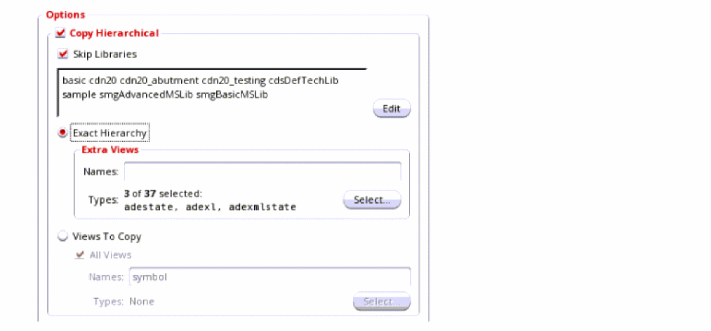

Copying a View Hierarchy in the Library Manager
To traverse the design hierarchy and copy all views referenced in your design to the destination library, follow these steps:
-
In the Options group box, select the Copy Hierarchical check box.
- By default, the Skip Libraries check box is also selected. When this check box is selected, cells in the named libraries are not copied and continue to reference their original library. You might want to skip libraries such as reference libraries of contacts, vias, and so on. You can add their names in the text box or click the Edit button to open the Skip Libraries Editor dialog box and select the libraries to skip.
-
To limit the search to the exact hierarchy of your design when collecting the cellview list for copying, select the Exact Hierarchy check box. When this check box is selected, only those cellviews found in the design hierarchy are included in the copy operation.
The Extra Views box becomes active. If you include additional view names or view types in this box, the search is expanded to include any matching views found in your design hierarchy in the copy operation. If any of these matching views have their own hierarchies, those additional hierarchies are also included.
In the Names field, type the names of one or more space-separated views to copy. You can also type a valid filter string (for example,s*).
Additionally, or optionally, use the Select button to select specific view types. -
The Views To Copy – All Views check box appears selected by default. The Views To Copy option appears deselected until you deselect the All Views check box. If you leave the check box selected, the copy operation copies all views of the specified cell. Further, if you copy the cell hierarchically, the copy operation also copies all instantiated views.
To copy a particular set of views instead of all views, follow these steps:-
Deselect the All Views check box.
The Views To Copy option becomes active. -
In the Names field, type the names of one or more space-separated views to copy. You can also type a valid filter string (for example,
s*).
Additionally, or optionally, use the Select button to select specific view types.
All referenced views that match a specified view name or selected view type are copied to the destination. -
Deselect the All Views check box.
Return to top